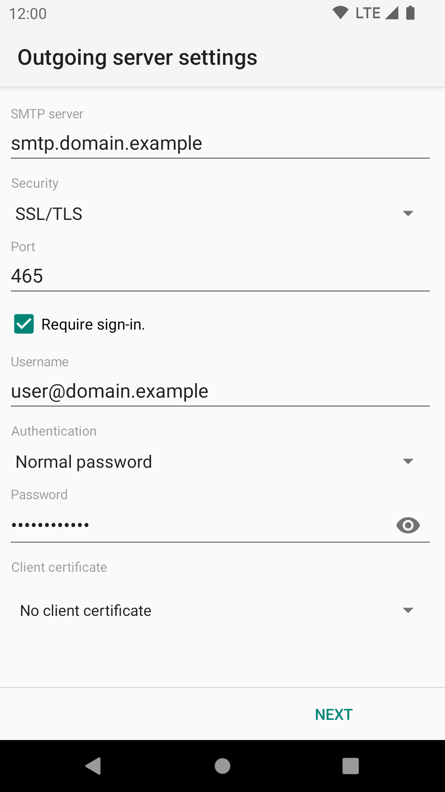

Outgoing settings¶
Configuring the outgoing server¶
To be able to send mail K-9 Mail needs to know the settings to your provider's SMTP server. In this step of the account creation process you have to provide those details. Below is an explanation of the different settings. In certain circumstances, you may need to use a different outgoing server than you'd expect; we'll discuss those later.
Because of the nature of email service, you often (if not always, these days) send outgoing mail to one server, but pick up incoming mail from a separate one; this is why many of the items below say "this is often, but not always, the same as the setting for incoming mail".

SMTP server: This is the hostname or IP address of your SMTP server. As discussed under IMAP, this name or IP must be accessible from any network from which you may want to send mail, whether your cellular carrier's WAN or a private LAN via Wi-Fi. See below for more details if you have trouble.
Security: This specifies the cryptographic protocol that should be used when connecting to your SMTP server. Available options are:
- None: This doesn't use any transport security at all.
- SSL/TLS: TLS is used.
- STARTTLS: The STARTTLS method is used.
TLS and STARTTLS are both secure so it does not matter which you use, as long as it is supported by your outgoing mail provider.
Port: The port number your provider's SMTP is listening on. This may be 465 or 587, and in rare cases 25, depending on the configuration and transport security settings of your server and K-9.
Require sign-in: Tells K-9 Mail whether or not it will be expected to authenticate to the server. In almost all cases this needs to remain checked.
Username: The username that's needed to authenticate to the SMTP server. This is usually equal to either the left-hand side of, or the entire, email address; your mail server operator should have told you what to use as an Outgoing username -- and it will commonly be identical to the incoming username, though not always.
Authentication: This specifies which authentication method to use. Available options are:
- Normal password: This is the default method that will automatically detect which authentication methods are supported. You shouldn't need to change this.
- Encrypted password: Use this if your server doesn't support transport security but supports the CRAM_MD5 authentication method.
- Client certificate: Use this if the service supports authentication using the client certificate from the TLS connection. If the server requires both certificate and password, choose one of the "Password" options here.
- OAuth 2.0: The app only supports this method with a handful of email providers (currently: Gmail, Yahoo, AOL, Hotmail/Outlook).
- Password, transmitted insecurely: (Only displayed if Security is "None") Use only as a last resort. The password will be transmitted without any encryption.
Password: The password that's needed to authenticate to the SMTP server. This is often, though not always, identical to the password for the incoming server.
Client certificate: If the server expects a TLS client certificate to be provided during the initial connection, use this to select one from the local Android certificate store.
To complete the outgoing server configuration click "Next". Again, K-9 Mail tries to connect to the server to verify the settings you just entered.

If the server has an invalid certificate (e.g. self-signed) then at this point you can inspect the certificate and choose to accept it permanently. Check with your mail provider before accepting the certificate, since this could indicate an attempt to tamper with your mail connection.

Account options¶
After successfully setting up the incoming and outgoing servers, you can now configure some basic settings on how often K-9 Mail checks for new messages, if you want to be notified of new mail, etc. These settings are specific to each account/mailbox you configure; you can set them differently for different mailboxes.

Folder poll frequency: Here you specify in what interval K-9 Mail should check the incoming server to see if there are new messages. Available options are:
- Never
- Every 15 minutes
- Every 30 minutes
- Every hour
- Every 2 hours
- Every 3 hours
- Every 6 hours
- Every 12 hours
- Every 24 hours
Number of messages to display: This value determines how many messages are kept locally cached and displayed. Available options are:
- 25 messages
- 50 messages
- 100 messages
- 250 messages
- 500 messages
- 1000 messages
Higher values have some performance implications. See Local folder size for more information.
Notify me when mail arrives: If this is checked you are notified when a new message was downloaded in this mailbox. Notification type (LED, vibration) and ringtone can be configured later. See Notifications for more information.
Last step¶
To complete the account creation you have to fill out the following two fields:

Give this account a name (optional): This is the name of the account that will be displayed in the account list. If you leave this field empty the email address associated with this account will be used.
Type your name: This will be used as your name for messages sent using this account. Recipients of your email will see this name.
Once you've done this, click "Done", and the account will be completely set up.